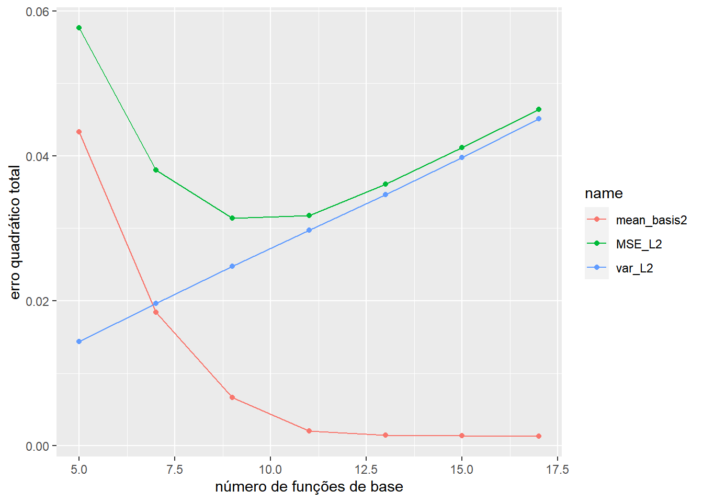

Dia-02
Modelagem de dados funcionais com expansões de base predefinida
Tópicos dia 2:
Construir diferentes funções de base em R
Criar dados funcionais
Regressão linear em funções de base (OLS)
Como escolher o número de funções de base?
Como explicar a suavidade na curva subjacente?
- métodos do kernel
- Suavização penalizada e seleção do parâmetro de suavização
[Os Código são cortesia de Giles Hooker]
1 Várias funções base:
As funções base, também conhecidas como funções de base, são utilizadas em análise estatística e modelagem para descrever ou aproximar relações complexas entre variáveis. Elas são usadas como componentes de modelos estatísticos e permitem representar de forma flexível e adequada diferentes padrões de dados.
As funções base são frequentemente aplicadas em análise de regressão, onde o objetivo é encontrar uma função que relacione uma variável dependente a uma ou mais variáveis independentes. Elas formam uma base para representar o comportamento geral dos dados e permitem expressar as relações entre as variáveis de forma mais simples e interpretável.
Existem diferentes tipos de funções base, sendo as mais comuns:
Funções polinomiais: São funções base construídas a partir de polinômios. Geralmente são utilizadas funções polinomiais de grau baixo, como polinômios de primeira e segunda ordem, para ajustar curvas lineares e quadráticas, respectivamente.
Funções splines: As funções splines dividem o domínio de interesse em segmentos menores e utilizam polinômios de grau baixo em cada segmento para modelar os dados. Isso permite uma flexibilidade maior na representação de padrões complexos e não lineares.
Funções de onda: São funções que se repetem ao longo de um domínio e podem ser usadas para modelar fenômenos periódicos. Exemplos comuns são as funções seno e cosseno.
Funções de base radial: São funções que dependem da distância entre pontos de dados e um centro definido. Essas funções são frequentemente utilizadas em problemas de interpolação ou para modelar dados com padrões radiais.
Ao escolher as funções base adequadas, é possível capturar diferentes características dos dados e ajustar modelos que se ajustem melhor aos padrões observados. A seleção correta das funções base é um aspecto importante na modelagem estatística, e depende do conhecimento do pesquisador sobre o problema em questão, bem como das características dos dados disponíveis.
1.1 Biblioteca fda
A biblioteca fda (Functional Data Analysis) é um pacote em R que fornece funcionalidades para análise de dados funcionais. A análise de dados funcionais é uma área da estatística que lida com dados observados como funções contínuas ao longo de uma dimensão, como séries temporais, curvas suaves ou imagens médicas.
O fda permite a manipulação, visualização, modelagem e análise de dados funcionais de maneira eficiente. Alguns recursos e funcionalidades principais do fda incluem:
Representação de dados funcionais: O pacote oferece estruturas de dados adequadas para representar e armazenar dados funcionais, como objetos fd (functional data) e fdata (functional data array).
Visualização de dados funcionais: O fda inclui funções para plotagem e visualização de dados funcionais, permitindo a criação de gráficos de séries temporais, curvas suaves e outras representações visuais adequadas para dados funcionais.
Análise exploratória: O pacote fornece métodos estatísticos para análise exploratória de dados funcionais, incluindo medidas descritivas, como média, mediana e desvio padrão funcional, além de ferramentas para análise de variabilidade e análise de componentes principais funcionais.
Modelagem e ajuste de dados funcionais: O fda oferece métodos para modelar dados funcionais, incluindo regressão funcional, análise de covariância funcional e análise de séries temporais funcionais. Isso permite ajustar modelos estatísticos apropriados aos dados funcionais.
Alinhamento e registro de dados funcionais: O pacote inclui funções para alinhar e registrar dados funcionais, que são úteis quando se deseja comparar ou combinar diferentes curvas ou séries temporais funcionais.
A biblioteca fda é uma ferramenta poderosa para análise de dados funcionais e pode ser usada em uma variedade de aplicações, como medicina, economia, engenharia e muitas outras áreas em que os dados são naturalmente representados como funções contínuas.
1.2 Bases Monomiais
A função base monomial, do pacote fda, requer o domínio e o número da base. Por exemplo, a base monomial com K=6 funções de base definidas no intervalo [0,1] pode ser construída da seguinte forma.
bbasis_obj = create.monomial.basis(rangeval=c(0,1), nbasis = 6)Isso retornará uma saída como “funções”. Para avaliar as bases criadas, em uma grade de s pontos, podemos:
x <- seq(0,1,length.out=100) # grade de pontos
bbasisevals <- eval.basis(x, bbasis_obj) # avaliando as bases na grade de pontosPara visualizar as bases monomiais:
x1 <- x %>%
as_tibble() %>%
rownames_to_column()
bbasisevals1 <- bbasisevals %>%
as_tibble() %>%
rownames_to_column()
basis_plot <- left_join(x1,bbasisevals1, by = "rowname")
basis_plot %>%
pivot_longer(
cols = starts_with("monomial"),
names_to = "degree",
values_to = "values") %>%
group_by(value) %>%
ggplot(aes(value, values, group = degree, color = degree))+
geom_line()+
labs(x = "X", y = "fns bases", title = "Bases monomiais com k=6")1.3 Bases de Fourier
A análise de Fourier requer que sejam definidos o domínio, o período de oscilação e o número de funções de base.
x <- seq(0,1,length.out=100)
fbasis_obj <- create.fourier.basis(rangeval=c(0,1),
nbasis=65, period = 1)
fbasisevals <- eval.basis(x, fbasis_obj)Para visualizar as bases de Fourier:
x1 <- x %>%
as_tibble() %>%
rownames_to_column()
fbasisevals1 <- fbasisevals %>%
as_tibble() %>%
rownames_to_column()
basis_plot <- left_join(x1,fbasisevals1, by = "rowname")
# plotando as bases de fourier
basis_plot %>%
dplyr::select(2:5) %>% # escolhendo o número de bases no plot - 2:5 três bases
pivot_longer(
cols = starts_with(c("sin","co")),
names_to = "degree",
values_to = "values") %>%
group_by(value) %>%
ggplot(aes(value, values, group = degree, color = degree))+
geom_line()+
labs(x = "X", y = "fns bases", title = "Três primeiras bases de Fourie")1.4 Bases B-Spline
A base B-spline requer o domínio, as funções de base numérica e o grau.
x <- seq(0,1,length.out=100)
bsbasis_obj <- create.bspline.basis(rangeval=c(0,1),
nbasis=10, norder=4)
bsbasisevals <- eval.basis(x, bsbasis_obj)Para visualizar as bases de B-spline:
x1 <- x %>%
as_tibble() %>%
rownames_to_column()
bsbasisevals1 <- bsbasisevals %>%
as_tibble() %>%
rownames_to_column()
basis_plot <- left_join(x1,bsbasisevals1, by = "rowname")
# plotando B-Spline basis
basis_plot %>%
dplyr::select(2:12) %>%
pivot_longer(
cols = starts_with("bspl"),
names_to = "degree",
values_to = "values") %>%
group_by(value) %>%
ggplot(aes(value, values, group = degree, color = degree))+
geom_line()+
labs(x = "X", y = "fns bases", title = "B-spline cúbica com k=10")+
theme(
legend.position = "none"
)Testando diferentes valores de nbasis e/ou norder.
# norder =2
x <- seq(0,1,length.out=100)
bsbasis_obj <- create.bspline.basis(rangeval=c(0,1),
nbasis=10, norder=2)
bsbasisevals <- eval.basis(x, bsbasis_obj)
x1 <- x %>%
as_tibble() %>%
rownames_to_column()
bsbasisevals1 <- bsbasisevals %>%
as_tibble() %>%
rownames_to_column()
basis_plot <- left_join(x1,bsbasisevals1, by = "rowname")
# plotando B-Spline basis
basis_plot %>%
dplyr::select(2:12) %>%
pivot_longer(
cols = starts_with("bspl"),
names_to = "degree",
values_to = "values") %>%
group_by(value) %>%
ggplot(aes(value, values, group = degree, color = degree))+
geom_line()+
theme(
legend.position = "none"
)+
labs(x = "X", y = "fns bases", title = "B-spline linear com k=10")1.5 Outras bases
O pacote fda também oferece a possibilidade de construir outros tipos de bases. Para visualizar a lista de bases disponíveis, você pode digitar ?create.+“tab”.
2 O objeto dados funcionais (FD) do pacote fda
Definido por uma base de funções e um vetor de coeficientes aleatórios correspondentes, a função fd desempenha o papel de construtor de objetos de dados funcionais.
nb <- 10
coef <- rnorm(nb)
bsbasis_obj <- create.bspline.basis(rangeval=c(0,1),
nbasis=nb, norder=4)
fd_obj <- fd(coef, bsbasis_obj)
x <- seq(0,1,length.out = 100)
fd_eval <- eval.fd(x, fd_obj)Para visualizar as bases de aleatórias:
x1 <- x %>%
as_tibble() %>%
rownames_to_column()
#
fd_eval1 <- fd_eval %>%
as_tibble() %>%
rownames_to_column()
#
basis_plot <- left_join(x1,fd_eval1, by = "rowname")
#
# plotando B-Spline basis
basis_plot %>%
pivot_longer(
cols = starts_with("reps"),
names_to = "degree",
values_to = "values") %>%
group_by(value) %>%
ggplot(aes(value, values, group = degree, color = degree))+
geom_line()+
theme(
legend.position = "none"
)+
labs(x = "X", y = "fns bases", title = "Função aleatória usando B-spline")Tente executar o código acima várias vezes. Tente também executar o código com um número diferente de funções base, por exemplo nb <- 5, nb <- 15, nb <- 30.
Para gerar (n = 20) múltiplas funções aleatórias você pode criar uma matriz de coeficientes aleatórios com dimensão de #bases por n; por exemplo.
n <- 20 ; nb <- 10
coef = matrix(rnorm(n*nb),nb,n)
# dim(coefs) # [1] 10 20
bsbasis_obj <- create.bspline.basis(rangeval=c(0,1),
nbasis=nb, norder=4)
fd_obj <- fd(coef, bsbasis_obj)
x <- seq(0,1,length.out = 100)
fd_eval <- eval.fd(x, fd_obj)Para visualizar as funções aleatórias:
x1 <- x %>%
as_tibble() %>%
rownames_to_column()
fd_eval1 <- fd_eval %>%
as_tibble() %>%
rownames_to_column()
basis_plot <- left_join(x1,fd_eval1, by = "rowname")
basis_plot %>%
# select(2:12) %>% # escolhendo o número de bases no plot - 2:5 três bases
pivot_longer(
cols = starts_with("reps"),
names_to = "degree",
values_to = "values") %>%
group_by(value) %>%
ggplot(aes(value, values, group = degree, color = degree))+
geom_line()+
theme(
legend.position = "none"
)+
labs(x = "X", y = "fns bases", title = "20 Funções aleatórias usando B-spline")Algumas outras funções úteis do pacote fda:
deriv.fd: fornece a derivada de um objeto fd (o valor retornado também é um objeto fd); por exemplo. tentedrfd_obj <- deriv.fd(fd_obj, 1);eval.fd(drfd_obj, x).podemos fazer aritmética com os objetos fd; por exemplo.
eval.fd(fd_obj[1]+fd_obj[2], x)operações estatísticas; por exemplo.
mean(fd_obj)oustd.fd(fd_obj)
3 Regressão linear em funções de base (OLS)
Aqui, tentaremos usar diferentes funções básicas para suavizar os dados meteorológicos canadenses, que estão disponíveis no pacote fda.
(Ilustrado com base de Fourier)
Vamos nos concentrar na precipitação média diária de Vancouver (transformação log), representada por apenas uma das curvas observadas.
data("CanadianWeather")
#str(CanadianWeather)
#view(CanadianWeather$dailyAv)
months <- row.names(CanadianWeather$dailyAv) %>%
as_tibble() %>%
rownames_to_column()
precipitation_log <- CanadianWeather$dailyAv %>%
as_tibble() %>%
dplyr::select(contains(c("log"))) %>%
rownames_to_column()
precipitation_log <- left_join(months, precipitation_log, by = "rowname") %>%
dplyr::select(-rowname)
precipitation_log %>%
dplyr::select(value, dplyr::contains("Vancouver")) %>%
separate_wider_position(value,c(month = 3,day=2)) %>%
mutate(
day_month = as.numeric(day),
day_year = 1:nrow(precipitation_log)
) %>%
ggplot(aes(day_year, Vancouver.log10precip))+
geom_point()+
geom_line()+
labs(x = "dia", y = "precipitação-log", title = "log da precipitação média diária de vancouver")Agora vamos tentar suavizar os pontos observados usando a base de Fourier. Para usar a base de Fourier, precisamos definir o domínio, o período e o número da base.
day <- 1:365
rangval=range(day)
period = 365
nbasis = 3
fbasis=create.fourier.basis(rangval, nbasis=nbasis, period=period)
bvals = eval.basis(day, fbasis)
Xbasis =bvalsVamos ajustar um modelo de regressão linear utilizando as funções de base criadas (OLS).
lm.fit = lm(Vancouver.log10precip ~ 0 + Xbasis, data = precipitation_log)
# Visualizando o modelo
lm.fit %>%
broom::augment() %>%
mutate(
day_year = 1:365
) %>%
ggplot(aes(day_year, `Vancouver.log10precip`))+
geom_point()+
geom_line(aes(day_year, .fitted), color = "red", linewidth = 2, linetype = 1)+
labs(x = "dia", y = "precipitação-log", title = "Fourier-nbasis = 3")Calculando a segunda derivada da curva ajustada.
yfitfd = fd(lm.fit$coefficients,fbasis) #obtain FD object
yfit2D = eval.fd(day, yfitfd, 2) # evaluate the 2nd deriv. of the fit at day
yfit2D %>%
bind_cols(day) %>%
ggplot(aes(`...2`, `...1` ))+
geom_line()+
theme_classic()+
labs(x = "dia", y = "2D precipitação-log", title = glue::glue("Média dos quadrados da 2D log-precp. = ",
round(mean(yfit2D^2),2)))New names:
• `` -> `...1`
• `` -> `...2`Agora tente o código com nbasis = 13, nbasis = 27 e nbasis = 365. Qual é o efeito de usar diferentes números de bases?
4 Como determinar o número de funções de base?
Estudo de simulação (compensação de viés-variância)
Para saber mais sobre o estudo de simulação, aqui estão os slides preparados pelo Dr. Davidian.
O exercício de simulação a seguir ilustra a compensação de viés-variância. Vamos nos concentrar em observar o efeito de diferentes escolhas de número de funções de base no viés, variância e erro quadrático médio (MSE).
O viés e a variância do estimador \(\hat{X}(t)\) são dados por:
\[ \text{Bias}(\hat{X}(t)) = E\{\hat{X}(t)\} - X(t), e \]
\[ \text{Var}(\hat{X}(t)) =\mathbb{E}\left[ \left( \hat{X}(t) - \mathbb{E}\left[ \hat{X}(t) \right] \right)^2 \right], \]
respectivamente. Para t fixo, o MSE é definido como:
\[ \text{MSE}\left\{\hat{X}(t)\right\} = \mathbb{E}\left[ \left( \hat{X}(t) - \mathbb{E}\left[X(t) \right] \right)^2 \right] = \text{Bias}^2\{\hat{X}(t)\} + \text{Var}\{\hat{X}(t)\} \]
Para uma curva \(Y(\cdot)\) gostaríamos de selecionar o número de funções de base para minimizar o erro quadrado médio integrado, \(\int TMSE\{\hat{X}(t)\} dt.\)
Podemos estudar essas estatísticas por meio de simulação. Neste caso, iremos gerar conjuntos de dados simulados que imitam as medições de precipitação realizadas em Vancouver \((l=26)\).
A seguir está um breve esboço do experimento de simulação:
- Suavize as medições de precipitação de Vancouver, \(Y(t_j)\), usando B-spline e obtenha
a curva ajustada, \(\hat{X}_0(\cdot)\).
Os resíduos, \(\epsilon_j = Y(t_j) - \hat{X}_0(t_j)\).
Assuma que a curva ajustada, \(\hat{X}_0(\cdot)\), é a “verdadeira” curva subjacente, \(X(\cdot)\).
Gere um conjunto de dados simulados adicionando resíduos, \(epsilon^*_j\), reamostrados aleatoriamente à curva subjacente “verdadeira”,\(X(\cdot)\); em outras palavras, obtenha \(Y^*_j\) por meio da adição dos resíduos reamostrados à curva subjacente \(Y^*_j = X(t_j) + \epsilon^*_j\).
Repita o Passo 3 para gerar muitos conjuntos de dados simulados!
Ajuste cada conjunto de dados simulados usando uma base de Fourier com K funções de base para várias escolhas de K.
Para cada K, calcule o viés, a variância e o MSE.
A seguir, passarei pelo código de simulação para um conjunto de dados simulado. Primeiro, definimos a resposta de interesse.
data("CanadianWeather")
#str(CanadianWeather)
#view(CanadianWeather$dailyAv)
months <- row.names(CanadianWeather$dailyAv) %>%
as_tibble() %>%
rownames_to_column()
precipitation <- CanadianWeather$dailyAv %>%
as_tibble() %>%
dplyr::select(contains(c("Precipitation"))) %>%
rownames_to_column()
precipitation <- left_join(months, precipitation, by = "rowname") %>%
dplyr::select(-rowname)Plotando os dados de precipitação
vancouver_precip <- precipitation %>%
dplyr::select(value, dplyr::contains("Vancouver")) %>%
separate_wider_position(value,c(month = 3,day=2)) %>%
mutate(
day_year = 1:nrow(precipitation)
) %>%
rename(
precipitation_mm = Vancouver.Precipitation.mm
) %>%
janitor::clean_names()
vancouver_precip %>%
ggplot(aes(day_year, precipitation_mm))+
geom_point()Em seguida, construímos um estimador suave utilizando funções de base B-spline cúbicas penalizadas (Passo 1). Vamos considerar a linha preta como a ‘verdade’. Nesse caso, utilizamos a função gam (do pacote mgcv) para a suavização, a qual será explicada em breve.
library(mgcv)
day <- 1:365
fit <- gam(vancouver_precip$precipitation_mm ~s(day, k = 10, bs = "cr"), method="REML")Por simplicidade vamos plotar essa curva ajustada usando o pacote ggplot2.
vancouver_precip %>%
ggplot(aes(day_year, precipitation_mm))+
geom_point()+
geom_smooth(method = lm, formula = y ~ splines::bs(x, 10), se = FALSE)Para gerar um conjunto de dados simulados (Passos 2-3)
Verificando os resíduos do modelo gerado
fit %>%
broom::augment() %>%
ggplot(aes(.resid))+
geom_histogram(bins = 15)+
theme_light()plot_df <- fit %>%
broom::augment() %>%
as_tibble() %>%
janitor::clean_names()
set.seed(420)
plot_df %>%
mutate(
Eps.star = sample(resid, size = 365, replace = TRUE),
Y.star = fitted + Eps.star
) %>%
ggplot(aes(day, Y.star))+
geom_point(alpha = 0.7)+
geom_smooth(method = lm, formula = y ~ splines::bs(x, 10), se = FALSE,linewidth = 2)+
geom_point(aes(day,vancouver_precip_precipitation_mm), color = "red", alpha = 0.7)+
geom_point(aes(day,fitted), color = "green")# salvando os dados simulados
simulated_precip<- plot_df %>%
mutate(
Eps.star = sample(resid, size = 365, replace = TRUE),
Y.star = fitted + Eps.star
)Os pontos em vermelho são os dados originais, em preto os simulados. A linha em azul é o modelo ajustado aos dados ariginais e a linha em verda o modelo ajustado aos dados simulados.
Uma vez que geramos o conjunto de dados simulados, faremos a suavização utilizando a função de base de Fourier com K funções de base, para várias escolhas de K. Aqui consideramos 7 valores diferentes; \(K = 2 \cdot \text{c}(2:8) + 1\)
K.vec = 2*c(2:8)+1; # we consider 7 different values of k.
# K.vec
t.day <- 1:365
m <- length(plot_df$resid)
fbasis=create.fourier.basis(rangeval = c(1, 365), nbasis=max(K.vec), period=365)
bvals = eval.basis(t.day,fbasis)
Xfit = array(0, c(m, length(K.vec)))
index=0
for (K in K.vec){
index=index+1
Xbasis = bvals[, 1:K]
lm.fit = lm(Y.star~0+Xbasis, data = simulated_precip)
Xfit[,index] = as.vector(lm.fit$fitted.values)
}
Xfit_df <- Xfit %>%
as_tibble() %>%
rename(
model_5 = V1,
model_7 = V2,
model_9 = V3,
model_11 = V4,
model_13 = V5,
model_15 = V6,
model_17 = V7
) %>%
mutate(
day = 1:365
)
models_plot <- left_join(simulated_precip, Xfit_df, by = "day")
models_plot %>%
dplyr::select(day,Y.star,vancouver_precip_precipitation_mm,contains("model")) %>%
pivot_longer(cols = contains("model")) %>%
group_by(day) %>%
ggplot(aes(day,value, group = name, color = name))+
geom_line(linewidth = 1.5)+
geom_point(aes(day, Y.star), color = "blue", alpha = 0.7)+
geom_point(aes(day, vancouver_precip_precipitation_mm), color = "red", alpha = 0.7)
Agora, realizamos os passos acima para B=100 conjuntos de dados e calculamos o viés, a variância, o MSE (Erro Quadrático Médio) e o MSE integrado.
K.vec = 2*c(2:8)+1;
B=100 #B=10000
m = length(simulated_precip$resid)
Xfit = array(0, c(B, m, length(K.vec)))
t.day <- simulated_precip$day
fbasis=create.fourier.basis(rangeval = c(1,365), nbasis=max(K.vec), period=365)
bvals = eval.basis(t.day,fbasis)
# ----
set.seed0=1234
for(b in 1:B){#b=1
set.seed(set.seed0+b)
simulated_precip <- plot_df %>%
mutate(
Eps.star = sample(resid, size = 365, replace = TRUE),
Y.star = fitted + Eps.star
)
# fit using Fourier basis and K basis functions
index=0
for (k in K.vec){
index=index+1
Xbasis = bvals[, 1:k]
lm.fit = lm(Y.star~0+Xbasis, data = simulated_precip)
Xfit[b,,index] = as.vector(lm.fit$fitted.values)
}
}
Mean.Est = apply(Xfit, c(2,3), mean)
Mean.Est2 = apply(Xfit, c(2,3), function(x) mean(x^2))
Xtrue <- simulated_precip$fitted
Bias = apply(Mean.Est, 2, function(x) Xtrue-x)
Var = Mean.Est2 - (Mean.Est)^2
Mse= Bias^2+Var
Mean_Bias2_L2 = apply(Bias^2, 2, mean)
Var_L2 = apply(Var, 2, mean)
MSE_L2 = apply(Mse, 2, mean)
bases_resid<- bind_cols(bases_number = K.vec,
mean_basis2 = Mean_Bias2_L2,
var_L2 = Var_L2,
MSE_L2 = MSE_L2)
bases_resid %>%
pivot_longer(cols = 2:4) %>%
group_by(bases_number) %>%
ggplot(aes(bases_number, value,group = name, color = name))+
geom_line()+
geom_point()+
labs(x = "número de funções de base", y = "erro quadrático total")
Cross-validation (Validação Cruzada)
Uma maneira de escolher o número de funções de base é a validação cruzada.
[trecho dos apontamentos de aula :]
- Deixe de fora uma observação \((t_j, Y_j)\).
- Ajuste os dados restantes e obtenha \(\hat{X}_j(t_j)\) para várias escolhas de \(K\).
- Escolha \(K\) que minimize o escore de validação cruzada, definido como:
\[CV(X) = \sum_{j=1}^{m} (Y_j - \hat{X}_j(t_j))^2\]
Essas são as mesmas medições
vancouver_precip <- precipitation %>%
dplyr::select(value, dplyr::contains("Vancouver")) %>%
separate_wider_position(value,c(month = 3,day=2)) %>%
mutate(
day_year = 1:nrow(precipitation)
) %>%
rename(
precipitation_mm = Vancouver.Precipitation.mm
) %>%
janitor::clean_names()
#
K.vec = 2*c(2:8)+1; m = length(vancouver_precip$day)
CVfit = matrix(0, nrow=m, ncol=length(K.vec))
y <- vancouver_precip$precipitation_mm
t.day <- vancouver_precip$day_year
fbasis=create.fourier.basis(rangeval = c(1,365), nbasis=max(K.vec), period=365)
bvals = eval.basis(t.day,fbasis)
for(j in 1:m){
Y.star = y[-j]
# fit using Fourier basis and K basis functions
index=0
for (K in K.vec){
index=index+1
Xbasis=bvals[, 1:K];
Xbasis.j = Xbasis[-j, ];
lm.fit = lm(Y.star~0+Xbasis.j); Xbasis.coeff = lm.fit$coefficients
y.fit = Xbasis%*%Xbasis.coeff
CVfit[j,index] = (y[j] - y.fit[j])^2
}
}
CV_L2 = apply(CVfit, 2, sum)
plot_resid <- bind_cols(bases_number = K.vec,
CV_L2 = CV_L2
)
plot_resid %>%
ggplot(aes(bases_number, CV_L2))+
geom_line()+
geom_point()+
labs(x="Numero de funções base",
y="erro total da validação cruzada",
title="K=13 com o menor valor da validação cruzada")Aqui nos concentramos nas medições médias de precipitação realizadas em Vancouver. (Atividade em grupo) Tente este exercício com as medições realizadas em Quebec \((l = 10)\). Ainda escolheria \(K = 13\) como o número ótimo de funções de base? E em relação a outros locais?
Verificando para Quebec!
quebec_precip <- precipitation %>%
dplyr::select(value, dplyr::contains("Quebec")) %>%
separate_wider_position(value,c(month = 3,day=2)) %>%
mutate(
day_year = 1:nrow(precipitation)
) %>%
rename(
precipitation_mm = Quebec.Precipitation.mm
) %>%
janitor::clean_names()
#
K.vec = 2*c(2:8)+1; m = length(quebec_precip$day)
CVfit = matrix(0, nrow=m, ncol=length(K.vec))
y <- quebec_precip$precipitation_mm
t.day <- quebec_precip$day_year
fbasis=create.fourier.basis(rangeval = c(1,365), nbasis=max(K.vec), period=365)
bvals = eval.basis(t.day,fbasis)
for(j in 1:m){
Y.star = y[-j]
# fit using Fourier basis and K basis functions
index=0
for (K in K.vec){
index=index+1
Xbasis=bvals[, 1:K];
Xbasis.j = Xbasis[-j, ];
lm.fit = lm(Y.star~0+Xbasis.j); Xbasis.coeff = lm.fit$coefficients
y.fit = Xbasis%*%Xbasis.coeff
CVfit[j,index] = (y[j] - y.fit[j])^2
}
}
CV_L2 = apply(CVfit, 2, sum)
plot_resid <- bind_cols(bases_number = K.vec,
CV_L2 = CV_L2
)
plot_resid %>%
ggplot(aes(bases_number, CV_L2))+
geom_line()+
geom_point()+
labs(x="Numero de funções base",
y="erro total da validação cruzada",
title="K=5 com o menor valor da validação cruzada")Como verificamos o número ideal de funções base para Quebec é igual a 5.
quebec_precip %>%
ggplot(aes(day_year, precipitation_mm))+
geom_point()+
geom_smooth(method = lm, formula = y ~ splines::bs(x, 5), se = FALSE)+
labs(x = "dia", y = "precipitação mm")5 Como levar em consideração a suavidade na curva subjacente?
Suavização com Penalidade de Rugosidade
Conforme discutido na palestra, uma maneira melhor de controlar o viés e a variância é definir a suavidade de uma função e controlá-la por meio do parâmetro de penalidade λ.
Primeiro, vamos analisar a curva suavizada para um parâmetro de penalidade específico. Aqui, novamente, usamos as medições de precipitação de Vancouver e construímos as funções de base b-spline. Observe a quantidade de funções de base que construímos! Sem a penalidade de rugosidade, o ajuste dos mínimos quadrados ordinários conecta cada uma das medições!
# define domain, #knots, and #order to construct b-spline basis
months <- row.names(CanadianWeather$dailyAv) %>%
as_tibble() %>%
rownames_to_column()
precipitation <- CanadianWeather$dailyAv %>%
as_tibble() %>%
dplyr::select(contains(c("Precipitation"))) %>%
rownames_to_column()
precipitation <- left_join(months, precipitation, by = "rowname") %>%
dplyr::select(-rowname)
vancouver_precip <- precipitation %>%
dplyr::select(value, dplyr::contains("Vancouver")) %>%
separate_wider_position(value,c(month = 3,day=2)) %>%
mutate(
day_year = 1:nrow(precipitation)
) %>%
rename(
precipitation_mm = Vancouver.Precipitation.mm
) %>%
janitor::clean_names()
#
t.day <- vancouver_precip$day_year
y <- vancouver_precip$precipitation_mm
y.basis <- create.bspline.basis(rangeval = c(1,365), nbasis = 365, norder=4)
bvals = eval.basis(t.day, y.basis)
Xbasis =bvals;
lm.fit = lm(y ~ 0 + Xbasis)
plot_df <- cbind(day_year = t.day, prec_mm = y ,fitted = lm.fit$fitted.values) %>%
as_tibble()
#
plot_df %>%
ggplot(aes(day_year, prec_mm))+
geom_line(color = "red")+
geom_point(color = "blue")+
geom_line(aes(day_year, fitted), color = "green")+
labs(x="dia",y="precipitação mm", title="365 bases de Fourier")
Agora vamos usar a penalidade de rugosidade λ e ver o seu efeito na suavidade do ajuste resultante.
lambda <- 10^4int2Lfd(m): use isso para definir o termo de penalidade de derivada de ordem m
fdPar(): define os parâmetros funcionais; neste caso, o termo de penalidade de segunda ordem da derivada e o parâmetro de suavização.
ybasis <- create.bspline.basis(rangeval = c(1,365), nbasis = 365, norder=4)
tD2fdPar = fdPar(y.basis, Lfdobj=int2Lfd(2), lambda=lambda)smooth.basis():suaviza os dados usando a penalidade de rugosidade e o parâmetro de suavização especificados em tD2fdPar
tyfd = smooth.basis(t.day,y,tD2fdPar) names(tyfd) [1] “fd” “df” “gcv” “beta” “SSE” “penmat” “y2cMap”
“argvals” “y”
fdum objeto de dados funcionais contendo uma suavização dos dados.dfuma medida de graus de liberdade da suavização.gcvo valor do critério de validação cruzada generalizado ou GCV.betaos coeficientes de regressão associados às variáveis covariáveis.SSEas somas dos quadrados do erro.penmat: a matriz de penalidade.y2cMapa matriz que mapeia os dados nos coeficientes: \(\left(\Phi^T \Phi + R\right)^{-1} \Phi^T\)
plot_df <- cbind(plot_df, smooth = tyfd$fd$coefs[,1])
plot_df %>%
ggplot(aes(day_year, prec_mm))+
geom_point(color = "red")+
geom_line(aes(day_year, smooth), color = "green",linewidth = 2)+
labs(x="dia", y="precipitação mm", title = "Vancouver (lambda=10000)")
O ajuste resultante com o parâmetro de suavização \(λ=104\) está bastante suave! (Atividade em grupo) Experimente valores diferentes de \(λ\) \((λ=0,0001, λ=100, λ=108)\) e discuta!
lambda <- 0.0001
tD2fdPar = fdPar(y.basis, Lfdobj=int2Lfd(2), lambda=lambda)
tyfd = smooth.basis(t.day,y,tD2fdPar)
plot_df <- cbind(plot_df, smooth2 = tyfd$fd$coefs[,1])
plot_df %>%
ggplot(aes(day_year, prec_mm))+
geom_point(color = "red")+
geom_line(aes(day_year, smooth2), color = "green",linewidth = 2)lambda <- 100
tD2fdPar = fdPar(y.basis, Lfdobj=int2Lfd(2), lambda=lambda)
tyfd = smooth.basis(t.day,y,tD2fdPar)
plot_df <- cbind(plot_df, smooth3 = tyfd$fd$coefs[,1])
plot_df %>%
ggplot(aes(day_year, prec_mm))+
geom_point(color = "red")+
geom_line(aes(day_year, smooth3), color = "green",linewidth = 2)lambda <- 10^8
tD2fdPar = fdPar(y.basis, Lfdobj=int2Lfd(2), lambda=lambda)
tyfd = smooth.basis(t.day,y,tD2fdPar)
plot_df <- cbind(plot_df, smooth4 = tyfd$fd$coefs[,1])
plot_df %>%
ggplot(aes(day_year, prec_mm))+
geom_point(color = "red")+
geom_line(aes(day_year, smooth4), color = "green",linewidth = 2)Existem várias maneiras de selecionar o \(λ\) ótimo; por exemplo, validação cruzada (atividade extraclasse), validação cruzada generalizada (GCV), estimação da máxima verossimilhança restrita (ReML) e assim por diante. Aqui ilustramos a seleção do parâmetro de suavização usando o escore GCV. O escore GCV é definido como
\[ GCV(\lambda) = \frac{m}{m-df(\lambda)} \times \frac{SSE}{m-df(\lambda)} \]
onde:
m é o número total de observações nos dados, \(df(\lambda)\) é a medida de graus de liberdade da suavização para o parâmetro de \(suavização \lambda\), e SSE é a soma dos quadrados do erro.
Geralmente, o GCV resulta em um ajuste mais suave do que o CV porque a qualidade do ajuste (medida pela SSE) é penalizada tanto pelos graus de liberdade df(λ) quanto pelo parâmetro de suavização λ.
O código a seguir usa o GCV para selecionar o λ ótimo, considerando 71 valores candidatos.
logl=seq(-5, 12, len=71)
#range(exp(logl))
gcv = rep(0,71)
for(i in c(1:length(logl))){
lambda=exp(logl[i])
tD2fdPar = fdPar(y.basis,Lfdobj=int2Lfd(2),lambda=lambda)
tyfd = smooth.basis(t.day,y,tD2fdPar)
gcv[i] = tyfd$gcv
}
# PLOT GCV of FIT versus log lambda
gcv %>%
as_tibble_col() %>%
mutate(
logl = logl
) %>%
ggplot(aes(logl, value))+
geom_line()+
labs(x="log lambda", y="GCV", title = "GCV(log.lambda)")O parâmetro de suavização ótimo selecionado usando o GCV é 992.2747156 e o ajuste resultante é apresentado abaixo.
index.logl.opt = which(gcv==min(gcv))
lambda.opt = exp(logl[index.logl.opt])
tD2fdPar = fdPar(y.basis,Lfdobj=int2Lfd(2),lambda=lambda.opt)
tyfd = smooth.basis(t.day,y,tD2fdPar)
plot_df <- cbind(day_year = t.day, prec_mm = y ,fitted = lm.fit$fitted.values) %>%
as_tibble()
plot_df <- cbind(plot_df, best_smooth = tyfd$fd$coefs[,1]) %>%
as_tibble()
plot_df %>%
ggplot(aes(day_year, prec_mm))+
geom_point()+
geom_line(aes(day_year, best_smooth), color= "green", linewidth = 2)+
labs(x = "dai", y="precipitação mm", title = "parâmetro de suavização ótimo = 992")Outras funções de suavização disponíveis no R
- A função
gamno pacotemgcvpossui diversas funções de base e métodos de seleção.- para o parâmetro de suavização. É flexível e útil!
- Vamos utilizar esta função nos capítulos seguintes!
- Exemplo (atividade extraclasse):
library(mgcv)
fit = gam(y ~ s(t.day, k = 30, bs = "cr"), method = 'REML')
fit %>%
broom::augment() %>%
ggplot(aes(t.day,y))+
geom_point()+
geom_line(aes(t.day, .fitted), color="green", linewidth = 1.5)+
ggtitle("usando a função gam (REML)")- Função “ksmooth” (suavização por regressão do núcleo)
- Exemplo (atividade extraclasse): experimente um núcleo gaussiano (“normal”) e diferentes larguras de banda (0.1, 10, 30).
fit2 = ksmooth(t.day, y, kernel = c("box"), bandwidth = 10)
fit %>%
broom::augment() %>%
mutate(
ksmooth_box = fit2$y
) %>%
ggplot(aes(t.day,y))+
geom_point()+
geom_line(aes(t.day, ksmooth_box), color="red", linewidth = 1.5)+
ggtitle("using ksmooth function (box)")#
#
# kernel (“normal”) - bandwidth = 10
fit3 = ksmooth(t.day, y, kernel = c("normal"), bandwidth = 10)
fit %>%
broom::augment() %>%
mutate(
ksmooth_normal = fit3$y
) %>%
ggplot(aes(t.day,y))+
geom_point()+
geom_line(aes(t.day, ksmooth_normal), color="red", linewidth = 1.5)+
ggtitle("using ksmooth function (normal|10)")#
#
# kernel (“normal”) - bandwidth = 0.1
fit4 = ksmooth(t.day, y, kernel = c("normal"), bandwidth = 0.1)
fit %>%
broom::augment() %>%
mutate(
ksmooth_normal = fit4$y
) %>%
ggplot(aes(t.day,y))+
geom_point()+
geom_line(aes(t.day, ksmooth_normal), color="red", linewidth = 1.5)+
ggtitle("using ksmooth function (normal|0.1)")#
# kernel (“normal”) - bandwidth = 0.1
fit5 = ksmooth(t.day, y, kernel = c("normal"), bandwidth = 30)
fit %>%
broom::augment() %>%
mutate(
ksmooth_normal = fit5$y
) %>%
ggplot(aes(t.day,y))+
geom_point()+
geom_line(aes(t.day, ksmooth_normal), color="red", linewidth = 1.5)+
ggtitle("using ksmooth function (normal|30)")5 Resumo
- Explorou diversas funções de base.
- Realizou ajustes de curvas suaves utilizando o método dos mínimos quadrados ordinários (OLS).
- Discutiu o trade-off entre viés e variância, assim como a seleção do número de funções de base através da validação cruzada.
- Também realizou ajustes de curvas suaves utilizando o critério de erro quadrático penalizado.
- Por fim, foram discutidos diversos métodos para selecionar o parâmetro de suavização ótimo (λ).
Atividades em Grupo / Atividades Extraclasse:
- Página 2: Experimente diferentes números de funções de base e faça ajustes utilizando o método dos mínimos quadrados ordinários (atividade em grupo).
- Página 3: Exercício de validação cruzada com medidas de precipitação transformadas em logaritmo obtidas em Quebec (atividade em grupo).
- Página 4: Experimente as funções gam e ksmooth, especialmente a função gam, pois a utilizaremos nos capítulos seguintes! (atividade extraclasse).